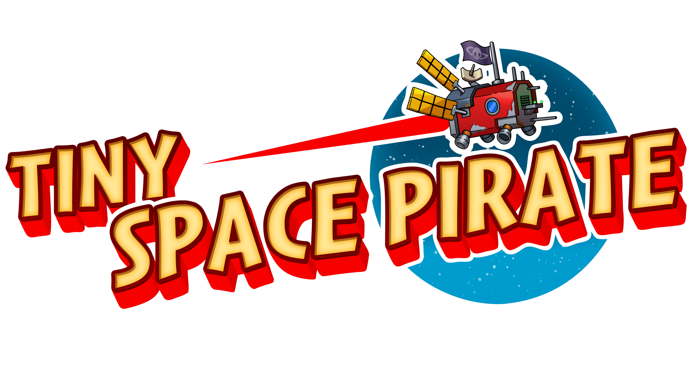

Our Games
Garden sprites
Garden Sprites is a grid-based puzzle game where you guide enchanted stone animals to the goal. Each animal follows its own unique movement rules, and solving a level means learning how to combine them through logic, blocking, and careful planning.
Tiny space pirate
Tiny Space Pirate is a cozy adventure where you sail the stars, help quirky space locals, and uncover tiny stories across the galaxy. Upgrade your ship, complete charming quests, and explore a handcrafted universe full of oddballs, mysteries, and cosmic cats. It’s not about treasure it’s about who you meet along the way.